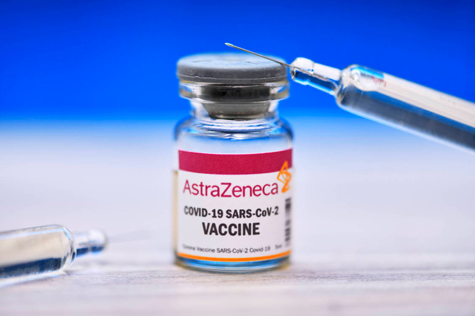
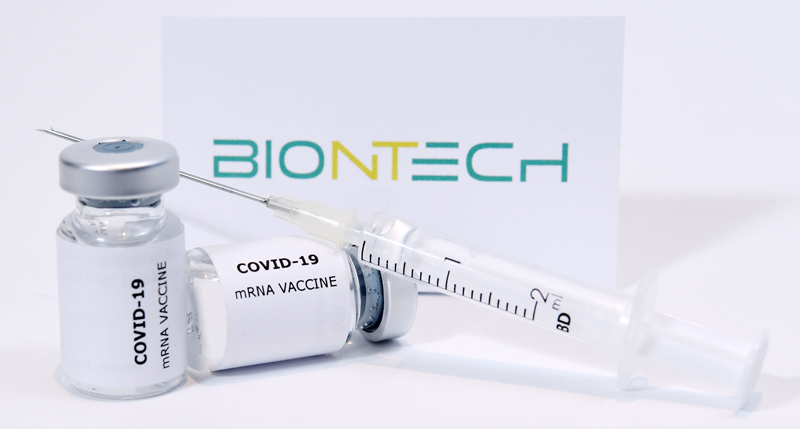

Coronaviren sind seit Jahrzehnten bekannt. Seit dem Jahreswechsel 2019 / 2020 zirkuliert weltweit ein neuartiges Coronavirus, das SARS-Coronavirus-2 (SARS-CoV-2), welches der Erreger der Krankheit COVID-19 (Corona Virus Disease 2019) ist.
Zu den häufigen Krankheitszeichen von COVID-19 zählen trockener Husten, Fieber, Atemnot sowie ein vorübergehender Verlust des Geruchs- und Geschmackssinnes. Auch ein allgemeines Krankheits- gefühl mit Kopf- und Gliederschmerzen, Halsschmerzen und Schnupfen wird beschrieben. Seltener berichten Patienten über Magen-Darm-Beschwerden, Bindehautentzündung und Lymphknotenschwellungen. Folgeschäden am Nerven- oder Herz-Kreislaufsystem sowie langanhaltende Krankheitsverläufe sind möglich. Obwohl ein milder Verlauf der Krankheit häufig ist und die meisten Erkrankten vollständig genesen, kommen auch schwere Verläufe beispiels- weise mit Lungenentzündung vor, die zum Tod führen können.
Neben dem Vermeiden einer Infektion durch Beachtung der AHA + A + L-Regeln (Abstand halten, Hygiene beachten, Alltag mit Maske, Corona-Warn-App herunterladen, regelmäßiges Lüften) bietet die Impfung den bestmöglichen Schutz vor einer Erkrankung.
Es sind mehrere Impfstoffe gegen COVID-19 zugelas- sen, die geeignet sind, um sich individuell vor COVID- 19 zu schützen und die Pandemie zu bekämpfen. Die hier besprochenen mRNA-COVID-19-Impfstoffe (Comirnaty® von BioNTech/Pfizer und COVID-19 Vaccine Moderna® von Moderna) sind genbasierte Impfstoffe, die auf der gleichen neuartigen Technologie beruhen. Weitere mRNA-Impfstoffe werden geprüft, sind aber derzeit noch nicht zugelassen.
mRNA (Boten-RNA oder messenger Ribonukleinsäure) ist die „Bauanleitung“ für jedes einzelne Eiweiß des Körpers und ist nicht mit der menschlichen Erbinformation der DNA zu verwechseln. In den mRNA-Impfstoffen gegen COVID-19 ist eine „Bauanleitung“ für einen einzigen Baustein des Virus (das sogenannte Spikeprotein) enthalten. Die COVID-19-mRNA-Impfstoffe enthalten keine vermehrungsfähigen Impfviren, d.h. geimpfte Personen können auch keine Impfviren auf andere Personen übertragen.
Die in den Impfstoffen enthaltene mRNA wird nach der Impfung nicht ins menschliche Erbgut eingebaut, sondern nach Eintritt in die Zellen (vor allem in Muskelzellen an der Impfstelle und in bestimmten Abwehrzellen) „abgelesen“, woraufhin diese Zellen dann das Spikeprotein selbst herstellen. Die so vom Körper des Geimpften gebildeten Spikeproteine wer- den vom Immunsystem als Fremdeiweiße erkannt; in der Folge werden Antikörper und Abwehrzellen gegen das Spikeprotein des Virus gebildet. So entsteht eine schützende Immunantwort.